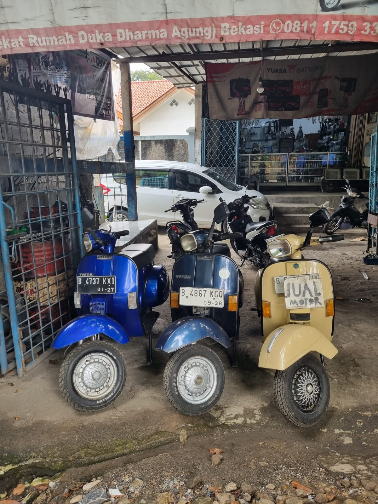

Ad Space 1
Place your ad here.
Ad Space 2
Place your ad here.
Seputar Otomotif
Siapa bilang harga vespa tua murah? Kini harganya melambung tinggi

Bekasi- Harga Vespa tua kini melambung tinggi di pasaran, menarik perhatian pecinta skuter antik di seluruh negeri. Tren ini terlihat jelas di sebuah bengkel yang beralamat di Jalan Perjuangan, Bengkel Vespa tua tersebut kini semakin ramai dengan aktivitas jual-beli dan restorasi.
Lonjakan Harga yang Signifikan
Vespa tua, khususnya model-model klasik dari tahun 1960-an dan 1970-an, kini dibanderol dengan harga yang bisa mencapai puluhan hingga ratusan juta rupiah. Peningkatan harga ini dipicu oleh meningkatnya minat kolektor dan penghobi skuter klasik yang mencari keunikan dan nilai sejarah dari Vespa.
Menurut Samono, seorang kolektor Vespa tua yang telah berkecimpung dalam dunia skuter antik selama lebih dari 30 tahun, "Harga Vespa tua memang naik drastis beberapa tahun terakhir.
Banyak orang yang tertarik karena nilai sejarah dan estetikanya yang klasik."
Wawancara Eksklusif di bengkel vespa Naga
Kami berbincang dengan salah satu pengguna Vespa di bengkel Naga untuk mendapatkan perspektif langsung tentang fenomena ini.
Menurut Heru (35 tahun) Pengguna vespa. "Vespa tua itu punya nilai seni yang tinggi. Setiap bagiannya punya cerita, dan restorasinya bisa sangat memuaskan. Saya baru saja menjual Vespa Super 1972 dengan harga 70 juta rupiah. Padahal, lima tahun lalu harganya mungkin hanya setengahnya."
Fenomena kenaikan harga Vespa tua menunjukkan bahwa minat terhadap skuter antik semakin tinggi. Nilai sejarah, keunikan desain, dan kepuasan dari proses restorasi membuat Vespa tua menjadi barang yang sangat diminati. Bagi para penghobi dan kolektor, memiliki Vespa tua bukan hanya soal transportasi, tetapi juga apresiasi terhadap seni dan sejarah otomotif
Vespa tua kini diminati kawula muda
Bekasi – Vespa tua kini menjadi incaran kaum muda yang semakin terpikat oleh gaya hidup retro dan nilai sejarah kendaraan klasik. Hal ini dapat dilihat dari ramainya bengkel banteng yang terletak di Agus Salim ramai dikunjungi kawula muda yang menggemari vespa tua.
Vespa model lama, khususnya dari era 1960-an dan 1970-an, menjadi sangat populer di kalangan anak muda. Mereka tertarik pada modifikasi, restorasi dan solidaritas yang dimiliki pengguna vespa. Banyak di antara mereka yang rela merogoh kocek dalam-dalam untuk mendapatkan Vespa impian mereka.
Untuk memahami lebih lanjut fenomena ini, kami berbincang dengan beberapa anak muda di bengkel banteng yang sedang melakukan restorasi vespanya untuk mengetahui alasan mereka gemar vespa tua.
Menurut tyo "Awalnya saya tertarik dengan Vespa karena sering lihat di media sosial. Setelah mencari tahu, saya jadi semakin suka dengan sejarah dan desain klasiknya. Saya baru saja membeli Vespa Sprint Veloce 1968 dan meskipun harganya cukup mahal, saya merasa sangat puas."
Selain itu alasan kawula muda mengkoleksi vespa tua juga untuk ikut andil dalam berbagai komunitas Vespa tua, mengikuti acara kopi darat, turing, dan kegiatan sosial lainnya. Komunitas ini tidak hanya menjadi tempat berbagi hobi, tetapi juga sarana untuk belajar lebih banyak tentang perawatan dan restorasi Vespa.
WAKTUNYA SERVICE RUTIN , LIHAT DULU JADWAL YANG TEPAT
SEPUTAR OTOMOTIF- Rekomendasi jadwal service rutin motor anda , agar tidak terjadi kendala saat berkendara nih sobat ! Servis motor rutin wajib dilakukan agar performa kendaraan kesayangan anda selalu prima. Servis motor rutin dapat dilakukan dengan mengganti beberapa komponen seperti ganti oli mesin, oli gardan, service cvt, dan sebagainya nih sobat. Berikut rekomendasi jadwal service rutin sobat.
1. GANTI OLI MESIN
Jadwal pergantian oli mesin dapat dilakukan ketika motor anda sunda mencapai 2000 kilometer atau sekitar 2 bulan sekali nih sob, ganti oli sangat penting loh sebagai pelumas, pelindung, dan pendingin pada kendaraan kalian
2. GANTI OLI GARDAN
Jadwal pergantian oli gardan dapat dilakukan ketika anda sudah melakukan 2 kali pergantian oli mesin atau sekitar 4000 - 6000 kilometer. Oli gardan berfungsi melumasi gir-gir yang berada di dalam rumah CVT.
3. SERVIS CVT
Bagi sobat yang memiliki motor matic khusunya, sangat penting nih untuk merawat cvt motor kalian, Jadwal service CVT biasa dilakukan setiap 4000-5000 kilometer . Perawatan CVT motor matic secara rutin menjadi sangat penting, agar motor berfungsi dengan baik. CVT sesungguhnya harus bebas debu, oli, dan air. Jika tidak, akan mengakibatkan licin dan berbunyi serta menghambat laju kendaraan, putaran mesin tidak bisa diteruskan ke roda belakang akibatnya akselerasi tenaga akan hilang.
4. SERVIS INJEKSI
Dalam melakukan servis injeksi, dapat dilakukan setiap kelipatan 10.000 kilometer. Jangan sampai menyesal saat injektor sudah kotor dan mampet sehingga menyebabkan masalah
5 REKOMENDASI OLI MOTOR TERBAIK UNTUK SEMUA JENIS MOTOR
1. Motul Scooter LE 4T 10W – 30
Oli motor dari motul yang di jual dengan harga Rp. 63.000 ini memperhatikan kinerja dari motor matic yang memang di ciptakan untuk mobilitas tinggi di jalanan, oli motor ini mempunyai tingkat emisi yang rendah yang akan membuat motor kita lebih hemat dalam menggunakan bbm, oli ini juga menggukana teknologi HC – Tech yang meskipun meminimalkan penggunaan emisi tetapi tetap memberikan perlindungan yang baik terhadap mesin motor kita.
2. Shell Advance AT AX7 Scooter
Oli motor ini cocok untuk anda yang lebih sering melakukan perjalanan jarak jauh dengan medan jalan yang cenderung lurus dan jarang adanya hambatan. Kandungan Shell Active Cleansing diklaim dapat membersihkan mesin dari kotoran berlebih di mesin meskipun di pakai dalam jarak tempuh yang cukup jauh, ini Shell Advance AT AX7 Scooter ini di jual dengan harga Rp. 59.000 sampai Rp. 60.000.
3. TOP 1 OIL MC Sport
OLI TOP 1 MC series memberikan perlindungan prima terhadap mesin motor 4T. Produk ini dilengkapi dengan Teknologi Maximum Protection yang memberikan perlindungan terhadap mesin kendaran kita unutk di gunakan dalam kondisi cuaca dan medan apapun. Oli ini di jual dengan harga berkisar Rp. 64.500 sampai Rp. 65.000.
4. IPONE R4000 RS
IPONE R4000 RS merupakan oli mesin semi sintetis yang cocok untuk motor jalanan dan trail bermesin 4T. Oli ini memiliki viskositas 10W-40 sehingga oli ini sangat cocok digunakan untuk segala keadaan cuaca. Oli ini memberikan rasa nyaman ketika berkendara dengan kecepatan yang cukup tinggi. Oli ini di jual dengan harga Rp. 185.000 per botol dengan isi 1.000 ml
5. Mobil Super Moto 10W-40
Super Moto 10W-40 ini merupakan oli atau pelumas mesin yang terbuat dari campuran minyak dasar yang berkualitas tinggi dan hidrokarbon. Oli ini juga menggunakan sistem aditif yang sudah canggih sehingga menjaga mesin agar tetap bersih dan juga oli ini dapat memberikan perlindungan dari aus dan korosi dengan lebih baik, alhasil kendaraan sepeda motor anda akan terawat lebih lama. Oli ini cocok untuk anda yang memiliki kendaraan motor 4T dengan Kopling. Oli ini di bandrol dengan harga Rp.57.500 sampai Rp.58.000.
Jadi di atas itu merupakan beberapa oli terbaik menurut kita yang dapat anda gunakan untuk memperpanjang usia mesin motor dan merawat mesin motor anda agar tetap terus dalam kondisi yang optimal.
Motor Langka : Permata Tersembunyi di Dunia Otomotif
Di dunia otomotif, motor langka selalu menjadi pusat perhatian bagi para kolektor dan pecinta kendaraan bermotor. Motor langka sering kali memiliki cerita unik dan sejarah panjang yang membuatnya begitu istimewa. Tidak hanya dari segi desain dan teknologi, tetapi juga karena jumlahnya yang terbatas, sehingga menambah nilai eksklusif dan daya tarik tersendiri. Keunikan ini menjadikan motor langka sebagai permata tersembunyi yang diburu oleh banyak orang.
Salah satu contoh motor langka yang terkenal adalah Honda NSR 150 SP, yang diproduksi pada tahun 2001.Namun dirumorkan hanya berjumlah 40-an unit saja yang ada di indonesia, menjadikannya incaran para kolektor. Motor ini terkenal dengan kecepatan pada zamannya dan desainnya sangat sporty. Keberadaan Honda NSR 150 SP dalam koleksi pribadi merupakan simbol status dan kebanggaan tersendiri, mencerminkan passion pemiliknya terhadap dunia otomotif klasik.<>
Motor langka lainnya adalah Yamaha Touch 125, motor ini merupakan motor Thailand yang dijual di Indonesia di ujung 1990-an menggantikan ekstistensi Yamaha RX-Z.Desain yang tergolong minimalis dan simple, meski masuk dalam jenis sport fairing tapi ia punya dimensi yang termasuk kompak dan ramping.Yamaha Touch 125 bermesin 2-tak berkapasitas 125.2 cc, meskipun tubuhnya kecil tapi urusan tenaga jangan diremehkan.Tidak hanya menawarkan kecepatan, tetapi juga estetika yang memukau, sehingga setiap kemunculannya selalu mengundang decak kagum.
Selain karena jumlahnya yang terbatas, motor langka juga sering kali memiliki teknologi dan inovasi yang mendahului zamannya. Seperti, Honda NSR 150 SP yang dikenal dengan kecepatan mesin nya. Meskipun hanya ada beberapa unit saja di Indonesia, motor ini menjadi bukti ketertarikan para kolektor yang ada di Indonesia. Inovasi seperti ini tidak hanya meningkatkan performa, tetapi juga menciptakan standar baru dalam industri otomotif.
Mengingat keunikan dan nilai historisnya, tidak heran jika motor langka selalu menjadi buruan para kolektor di seluruh dunia. Mereka tidak hanya mengapresiasi keindahan dan keunikannya, tetapi juga memahami nilai sejarah yang terkandung di dalamnya. Setiap motor langka memiliki cerita untuk diceritakan, dari proses produksinya hingga perjalanan panjang yang ditempuh hingga menjadi barang koleksi yang berharga. Bagi para kolektor, memiliki motor langka adalah sebuah pencapaian yang membanggakan dan bukti cinta mereka terhadap dunia otomotif.
Other Posts
Chopper Softail
Sebuah motor dengan tampilan elegan dan gagah.

Pts Special 90
Salah satu motor keluaran tahun 60-70 yang dulu di anggap motor rongsok namun sekarang banyak di cari.
Post 3
Brief description of Post 3.
Post 4
Brief description of Post 4.
Post 5
Brief description of Post 5.